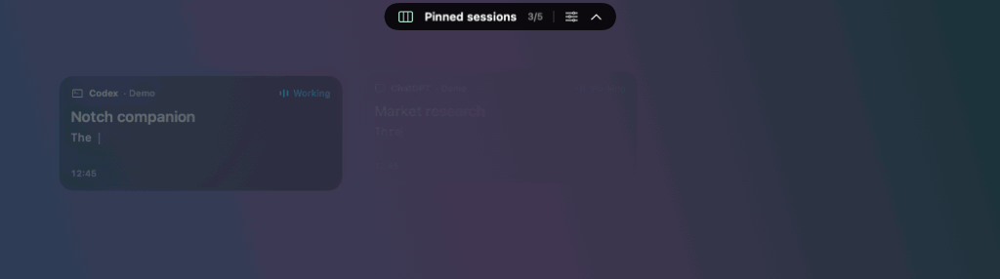
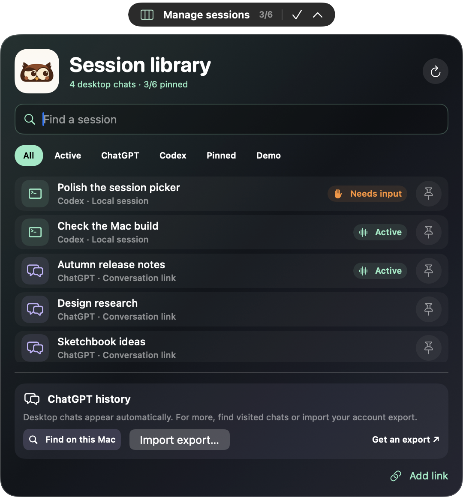

Research & learning
Compare options, study a topic or follow a long-running investigation.
Keep up with your AI conversations while you research, write, learn, plan or code. Pin up to five independent sessions, see what changed and what needs you, and jump back in without hunting through windows.
Available for macOS and Windows. Mac has a downloadable preview; Windows has a source-run preview. Features vary by platform and provider. More AI integrations are on the roadmap.
Mac: Apple silicon · macOS 13+ · Preview 0.1.7 | Windows: Python 3.9+ source previewYour AI sessions don't all belong to one project, profession or provider. Follow the conversations you care about without combining them or losing your place.
Compare options, study a topic or follow a long-running investigation.
Keep trip ideas, personal projects and business plans within reach.
Move between drafts, brainstorming sessions and feedback.
Track coding tasks and approvals alongside your other AI conversations.
All providers is the direction, not a claim about today's build. Existing support varies by app and version. The current Mac preview centers on Codex and ChatGPT; Claude is in development. We plan to investigate Qwen, Kimi, DeepSeek, MiniMax and more. Read the product vision and provider roadmap.

Open the session library and choose Active to find conversations that are working or waiting for you. Search by title, then pin the ones you want to follow.
Each tile shows one update at a time. The next sentence waits while you read. A working subagent appears under its Codex thread, and a saved fork stays available to reopen.
A single pin stays centered. Each tile is at most 300 points wide. On a smaller display, scroll across the row to reach your existing pins.

Both desktop previews help you track parallel AI sessions. The Mac build is downloadable; Windows currently runs from source. Follow the guide for your platform.
Unzip the download and open watchnotch. Click the notch strip to see three demo sessions. Open the sliders to pin a real Codex thread or ChatGPT conversation. Click a status sentence to reveal the whole update.
The preview is ad-hoc signed. If macOS blocks it, you can build the preview locally.
Install Python 3.9+ and Tkinter, then run py -3 windows\watchnotch.pyw from the repository. Search and pin sessions, follow reported activity, inspect available Codex usage, and open the right conversation. A connected Codex thread can receive text; ChatGPT drafts use Copy & open. Full Windows setup instructions.
When a session asks a question, its choices appear in the tile. Pick an option, or select each answer and click Send answers for a group of questions. Review a supported approval and choose Approve once or Deny.
Type below Jump in and press Return to send to a connected Codex thread or desktop ChatGPT conversation. For ChatGPT, keep the conversation open and grant watchnotch Accessibility access in System Settings. Use Copy & open when a handoff is needed.
The development build can preview the last assistant reply seen in an open, pinned ChatGPT conversation with Accessibility access. Paste one screenshot into a tile and add a multiline caption. Connected Codex threads receive both together. For ChatGPT, choose Copy image & open, then paste and send in the conversation.
On Mac, expand the strip by the camera or use the menu bar icon. Open the sliders or choose Session library…. Add a Codex thread from the local library, its UUID or its desktop link. For ChatGPT Chat and Work, use the desktop catalog, paste a private conversation link, search browser history on request, or import a ChatGPT export ZIP or conversations JSON file. Titles, IDs and dates stay on your Mac. Pins keep their order across launches.
Codex checks the local App Server about every 2.5 seconds. The tile shows a short visible update from the thread. Click a sentence to reveal it instantly, or enable Reduce Motion for full sentences. A subagent appears under its parent while working or waiting for input. Click it or a saved fork to open that thread.
In the Mac source build, ⓘ shows the reported Codex model, reasoning effort and percentage used in each available account window. Preview 0.1.7 shows recorded session tokens when available. See the original three-update example (16 seconds).
The Mac source build refreshes desktop activity about every three seconds, even with the notch collapsed. A quiet indexed chat shows Watching. Closing ChatGPT takes it offline, and reopening ChatGPT resumes monitoring. An active Work turn can appear by ID before its title arrives. In the development build, an open window matching a pin can provide a reply preview before the catalog entry appears. When the desktop composer offers Queue during a turn, the tile can queue a follow-up and show Queued in ChatGPT. A saved web link can reopen a conversation even when desktop activity is unavailable.
On the Mac source build, a pending question replaces that tile’s status. Other sessions keep updating. Codex supports offered choices, written answers when offered, and one-time command decisions. For desktop ChatGPT, keep the conversation open so watchnotch can mirror visible single-choice questions and approvals. Use Open session for a request that needs the original interface.
Jump in opens the selected thread or desktop chat. Use the globe or Control-click for Open in browser when a web link is available. Pair a Codex web link with its local UUID in Manage sessions. Open result opens an available result separately.
Each Mac tile keeps its own draft when you switch pins or collapse the row. In preview 0.1.7, the arrow sends text to Codex, and Copy & open hands a ChatGPT draft to its conversation. The Mac source build can send text to the verified desktop ChatGPT composer. Control-click the arrow for the clipboard handoff.
In the development build, Shift-Return adds a line. The editor grows to six lines, then scrolls. Copy a screenshot with Control–Shift–Command–4 and paste it into the tile, or choose Paste image. Remove it with ×. Codex accepts the image with an optional caption. For ChatGPT, paste the copied image in the conversation and send it there.
In development on Mac and Windows. Pin a private Claude Desktop chat link and use Jump in or Copy & open. On Mac, choose Enable Claude Desktop activity… and grant Accessibility access to see activity in an open chat. Windows keeps the conversation as a saved link. On Mac, Jump in was verified to reopen the exact chat on a free Claude Desktop account. The live Working to Ready transition still awaits an end-to-end check.
Claude Code sessions come from the local CLI’s agent list. In local preview 1f0dd9d, a saved background job appears unavailable when the CLI supplies neither a process ID nor live status. Its description can still show that it last needed input or was working. With automatic display enabled on Mac, active Claude Code sessions can appear without a manual pin. Follow a session’s status and use Copy attach command for a background job or Copy resume command to continue in the project terminal. Review permissions in Claude Code.
In development on Mac. Enable Automatically show active sessions to bring working and waiting sessions into the strip. They leave when idle. Your pins keep their order. Choose + to start a fresh Codex, ChatGPT or ChatGPT Work session.
On Codex, End session asks for confirmation before archiving the selected thread and removing its tile. On ChatGPT, Stop response stops the active turn in the matching desktop composer and keeps the chat available. ChatGPT approval buttons show the scope offered by the app, such as Allow this conversation.
Install Python 3.9 or later with Tkinter. From the repository root, run py -3 windows\watchnotch.pyw. Click the owl to expand the strip. Library search, Active filtering, desktop discovery, browser and export imports, and paged pins are available. Codex monitoring needs a running local daemon.
Follow activity and branches, inspect account usage or send text to a connected Codex thread. Review approvals in Codex. For ChatGPT, use Copy & open to continue in the conversation. Windows setup and verification notes ↗
On Mac, choose Replay demo events to try questions, one-time approvals and replies with sample sessions. Approving a demo file writes that sample locally. Denying skips it. Pins, demo output and snapshots live in the Mac Notch Session Companion folder under Application Support. On Windows, the saved library lives under %LOCALAPPDATA%\watchnotch.
For build commands, provider requirements, permissions and test procedures, read the Mac guide, Codex adapter notes and ChatGPT desktop notes.